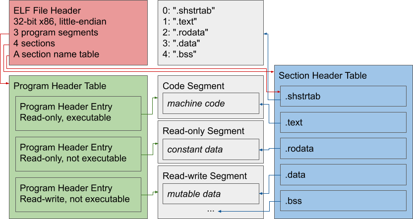
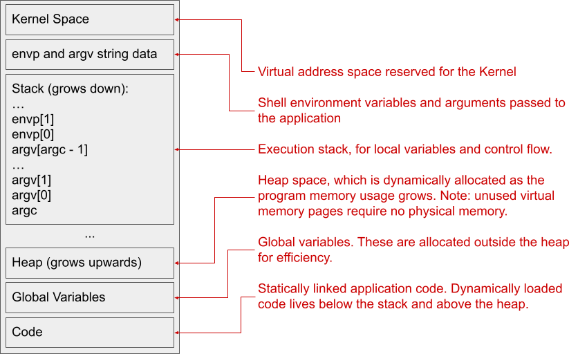

Anyone who has used C, C++, or any other “native” language is probably familiar with the idea that you have a compiler which takes your source code and turns it into a native binary which the system can execute.. but what does that actually mean? What is a native binary? If I compile a simple Hello, World! program in C, the resulting native binary is over 16KB. Surely it doesn’t take 16KB of machine code to print Hello World, so why is it so big? Lets take a closer look.
First, lets consider what we get from our execution environment. Most “native” applications are built for a specific Operating System (the C standard calls this a “hosted” environment). The OS provides us with a mechanism for starting our native application, and interfaces that allow the application to interact with the outside world (e.g. filesystem access, stdin, stdout, but also more primitive things such as the ability to request more RAM for the application). Since one OS might provide a different interface from another OS, native applications are not necessarily portable between different operating systems. We will look at what happens in a Linux environment, but many of the details will be similar for other OSes.
One of the most significant things provided by modern architectures is virtual memory. This allows every application to run with an independent address space. What this means is that two applications can both have a variable at the same virtual address without interfering with each other. Behind the scenes, the OS will map these virtual addresses to different physical addresses. One of the main benefits of virtual memory is that applications are shielded from each other by default: a rogue process cannot stomp all over the memory of another process when it goes wrong.
The very first thing which we will want to do with our application is start it. There are a few things that need to happen here:
envp, argc, argv) have to be copied
into memory.In Linux, native executable files are stored in ELF files. An ELF file has a few main components:
Below is a diagram of the logical layout of an ELF file. The sections below will elaborate on this layout.

The file header is responsible for configuring some basic options: what architecture the binary is intended for, whether the file format is 32-bit or 64-bit, some version fields which specify the ELF version to use, and various other things. The file header also specifies where to find the program header table and the section header table, and how many entries we should expect to find in each. However, probably the most significant field in the file header is the entry point: this is the address in memory that the OS should jump to at the very start of program execution, just after everything has been loaded into the right place.
The Section Header Table consists of an array of Section Header Entries. Each entry defines a single section. You may have heard of some sections before:
.text contains the executable machine code..rodata contains read-only data..data contains mutable data which has a non-zero initial value..bss contains mutable data which is initially zero.Section names are completely arbitrary: the above names are only used by
convention. You could easily make a program which had everything in a section
called .rick_astley if you wanted to mess with someone. In fact, the section
names themselves are stored as plain data in a specific section, conventionally
known as .shstrtab. Even this section need not have a name: it is identified
by its index.
Sections are primarily useful for development purposes: intermediate files during compilation can also stored using the ELF file format and will make heavy use of sections to organise different components of the program before they are finally put together by the linker. Additionally, sections may contain metadata such as function names and their corresponding machine code addresses to facilitate debugging.
While the above sections are present in almost every ELF executable, a minimal binary does not actually need any sections at all. Everything we need to know for program execution can be expressed using the Program Header Table. If we are striving for smaller binaries (or even trying to obfuscate our binaries against nosy programmers), we can completely strip out all of the sections.
The Program Header Table consists of an array of Program Header Entries. Each
entry defines a single program segment. There are multiple kinds of segment,
but the main one we are interested in here is PT_LOAD, which defines a segment
that the OS should load into memory before starting the application. For each
segment, we specify:
.bss segment, which only contains 0-valued variables. We can use this
feature to initialize many such variables without increasing the size of our
binary file.Finally, we get to the entry point of the program. This is the first place where
we can execute arbitrary code of our own, and is conventionally called _start.
The entry point of the program is not a function. We have no return address
on the stack, so we cannot return. We also may not have the stack aligned
appropriately for the ABI we are following, so we may have to do that
ourselves as well. The OS has provided us with the memory that we requested, as
well as a stack. However, before we can really do anything productive we need to
build a mental model of the memory layout.

Part of this layout is given to us by default: the OS reserves the Kernel space,
so there’s nothing we can do about that. The environment variables, arguments,
and stack are all set up by default in ELF, so we’ll get those without asking.
However, the rest of the layout is followed only by convention: we have complete
control over the placement of our program segments in ELF, so we can place our
code and global variables wherever we want. We don’t have to have a heap if we
don’t need one: after all, the heap is simply a data structure that uses system
calls to ask for more virtual memory addresses to be assigned to physical
memory. The normal interface for loading dynamic libraries, dlopen, does not
give us the flexibility to pick where the library is loaded, so we have to
follow that convention unless we want to write our own loader.
Now we can finally look at our entry point in earnest. When the OS has finished
setting up the memory layout that we described in our ELF file, it will jump to
the given entry point. At that time, the stack pointer will be pointing at
argc and will have an unspecified alignment. In 64-bit linux, the ABI calling
convention for linux is System V. In 32-bit linux, the convention is
cdecl, although there are many alternatives. In both cases, a function
call will push the return address onto to the top of the stack (which, since the
stack grows downwards, has the lowest address). Now we can see why _start is
not a function: there’s no return address on the stack.
Generally, _start is responsible for invoking global initializers (e.g.
constructors for global variables), calling main, and then exiting with a code
based on the return value from main. In order for us to call main, we need
to follow the appropriate calling convention, which means aligning the stack
appropriately (16-byte alignment, generally), putting the right values for
argc and argv into the appropriate places (the stack in cdecl, certain
registers in System V), and then executing call main to enter our familiar
territory.
Now that we know what we can find inside an ELF binary, how can we make it as small and fast as possible? A great article on the subject is A Whirlwind Tutorial on Creating Really Teensy ELF Executables for Linux, but that goes well beyond what most people will be willing to do for real projects, so lets focus on what we have learned:
Given this, we will aim to make a minimal ELF setup:
objdump or gdb, but we can always rebuild our binaries in
the normal fashion to reproduce issues in a better debugging environment.Without further ado, here’s the recipe:
Makefile:
CC = gcc -m32
LD = ld -m elf_i386
# Optimize for size and disable debugging features.
CFLAGS += -Os -DNDEBUG
# Omitting frame pointers can reduce the size of functions by eliminating
# the need to store the stack pointer upon entry. This is again mostly
# useful for generating stack traces or debugging.
CFLAGS += -fomit-frame-pointer
# Place all functions and variables in separate sections and instruct the
# linker to discard unused sections. This will automatically prune any data
# or code which we are not actually using.
CFLAGS += -ffunction-sections -fdata-sections
LDFLAGS += --gc-sections
# Disable the standard library and default start files: we'll write our own
# I/O routines and provide our own _start. Also, auto-include our bootstrap
# code.
CFLAGS += -nostdlib -nostartfiles -include start.h
# Disable position-independent code. This is necessary for our custom linker
# script to work properly.
CFLAGS += -fno-pic
# Build the binary and strip *all* sections. GNU strip doesn't have this
# option and will always leave behind section names, so we are using
# llvm-strip.
app: app.o link.ld
${LD} ${LDFLAGS} -T link.ld app.o -o app
llvm-strip --strip-sections app
# Compile our C program.
app.o: app.c start.h
${CC} ${CFLAGS} -c app.c -o app.o
link.ld:
/* Place all program output in a single program segment */
PHDRS {
all PT_LOAD FILEHDR PHDRS;
}
/* The program entry point */
ENTRY(_start)
/* Lay out sections with minimal alignment overhead, starting at 0x10000 */
SECTIONS {
. = 0x10000 + SIZEOF_HEADERS;
.text ALIGN(0x1) : { *(.text*) } :all
.rodata ALIGN(0x4) : { *(.rodata*) }
.data ALIGN(0x4) : { *(.data*) }
.bss ALIGN(0x4) : { *(.bss*) }
/DISCARD/ : {
*(*)
}
}
start.h:
// Flag this header as a system header. This will prevent warnings for
// unused statics, as well as for noreturn functions which GCC thinks can
// return.
#pragma GCC system_header
#define STDIN_FILENO 0u
#define STDOUT_FILENO 1u
#define STDERR_FILENO 2u
#define NULL ((void*)0)
// These will have different definitions for different platforms, but since
// we are specifically targeting 32-bit x86 we can give a single
// implementation.
typedef unsigned int size_t;
typedef int ssize_t;
#define bool _Bool
#define true ((_Bool)1)
#define false ((_Bool)0)
// System calls can be implemented with inline assembly. We could
// alternatively include an assembly file that provides syscalls and then
// link against it, but by using inline assembly we allow the compiler
// optimizer to completely inline the syscalls and generate optimal code to
// place the right values in the right registers directly instead of having
// to follow the calling convention. We can implement as many syscalls as we
// want. To start with, we can get quite far using only `read`, `write`, and
// `exit`. A table of syscalls can be found at
// https://chromium.googlesource.com/chromiumos/docs/+/master/constants/syscalls.md
static inline ssize_t read(
unsigned int fd, const void* buffer, size_t size) {
ssize_t result;
asm volatile("int $0x80"
: "=a"(result)
: "a"(3), "b"(fd), "c"(buffer), "d"(size)
: "memory");
return result;
}
static inline ssize_t write(
unsigned int fd, const void* buffer, size_t size) {
ssize_t result;
asm volatile("int $0x80"
: "=a"(result)
: "a"(4), "b"(fd), "c"(buffer), "d"(size)
: "memory");
return result;
}
static inline __attribute__((noreturn)) void exit(int code) {
asm volatile("int $0x80" : : "a"(1), "b"(code));
}
// Ensure that we only define the zero-argument version of main. We also
// declare main as static, which allows the compiler to inline main directly
// into _start without providing a non-inlined version.
static int main(void);
// Entry point of the program. Even though _start is not a function, we can
// write it as one as long as it never returns. However, we lose the ability
// to cleanly access argc and argv by doing this, in exchange for allowing
// the compiler to inline main into _start.
__attribute__((force_align_arg_pointer))
__attribute__((noreturn)) void _start() {
exit(main());
}
app.c:
int main() {
write(STDOUT_FILENO, "Hello, World!\n", 14);
}
After all this work, what have we achieved?
$ make
...
$ gcc -include unistd.h -Os -s app.c -o app-big
$ ls -l app app-big
-rwxr-xr-x 1 joe joe 131 Jan 19 19:20 app
-rwxr-xr-x 1 joe joe 14328 Jan 19 19:22 app-big
Aside from the -include unistd.h which replaces our start.h with the normal
definitions for each syscall, the command to build app-big is what I would
normally write when compiling a simple program. Yet, with ~50 lines of code
spread between Makefile, link.ld, and start.h, we can get a binary which
is literally 100x smaller!
From now on, I might spend a little more time shaving off the unnecessary bytes for my projects :)